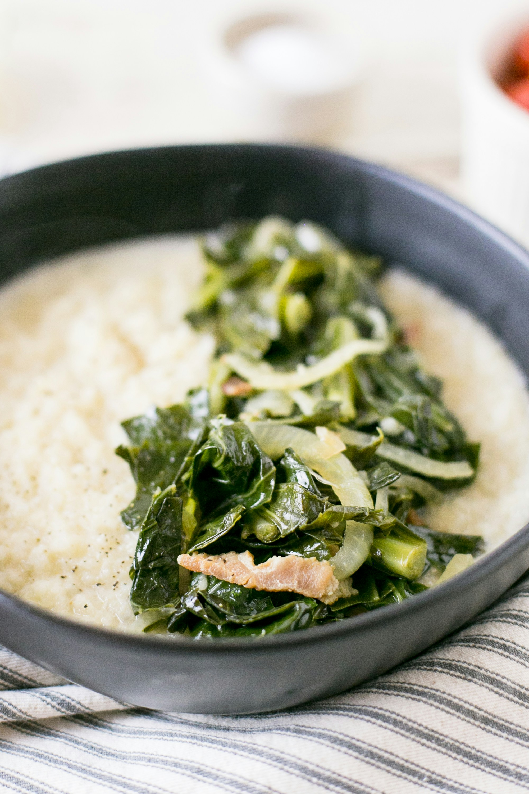

Collard greens

Description
A wholesome southern classic, made up of collard greens cooked in a savory pot likkur
Ingredients
- Collard greens
- 1 Onion diced
- 1 tbsp Red pepper flakes
- 1 fully cooked smoked turkey leg
- Chicken broth
- Black pepper to taste
- Smoked Applewood salt
- Distilled white vinegar
Method
- Wash greens and remove stems
- Cut greens into 1/2 inch squares
- In a large pot, heat olive oil. Once hot, add in onions and cook until tender and translucent. Add in garlic and red pepper flakes.
- Pour in chicken broth and add smoked turkey leg, bring to a boil and add greens to the pot.
- Reduce heat, cover, and simmer for one hour or until greens are soft, stirring several times while cooking.
- Add black pepper, smoked salt and vinegar and stir before serving.